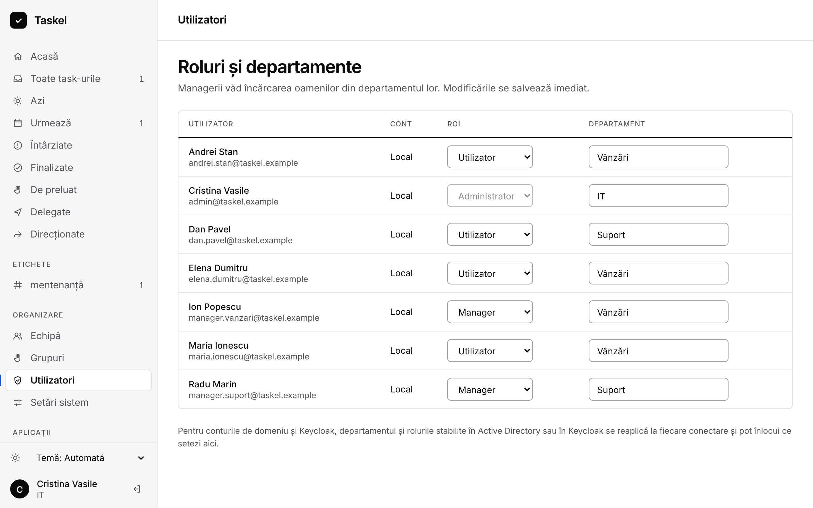
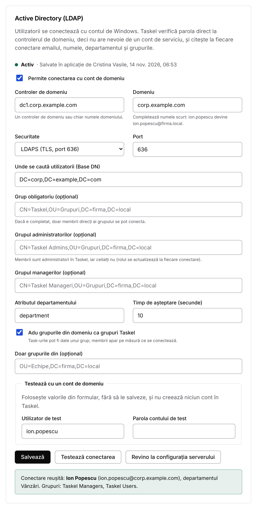
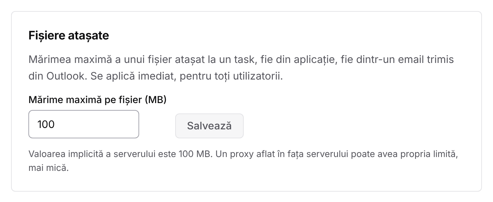

Conturi, roluri și departamente, grupuri, serverul de email, Active Directory, Keycloak și celelalte setări ale aplicației.
Administratorul stabilește cine ce rol are, din ce departament face parte fiecare și cum se leagă Taskel de serviciile firmei: email, Active Directory, Keycloak.
Manualul descrie ce are în plus rolul Administrator. Lucrul cu task-urile este în Manualul utilizatorului, iar ecranele Echipă și Grupuri în Manualul managerului; ambele se aplică și administratorilor. Instalarea serverului este descrisă separat, în Ghidul de instalare.
| Unde | Ce poți face |
|---|---|
| Utilizatori | Setezi rolul și departamentul fiecărui cont. |
| Echipă | Vezi încărcarea și calendarul oricărui departament, ales dintr-o listă. |
| Grupuri | Creezi grupuri cu oameni din orice departament și modifici orice grup de aplicație. |
| Setări sistem | Configurezi serverul de email, Active Directory, Keycloak și limita fișierelor atașate. |
| Rol | Are în plus față de rolul dinainte |
|---|---|
| Utilizator | Lucrează cu task-urile proprii și cu cele primite. |
| Manager | Vede echipa din departamentul lui; creează grupuri cu oameni din departament. |
| Administrator | Vede orice departament; gestionează utilizatorii, toate grupurile de aplicație și setările sistemului. |
Deschide Organizare → Utilizatori. Tabelul listează toate conturile.

| Valoare | Ce înseamnă |
|---|---|
| Local | Cont cu email și parolă ținute în Taskel. |
| Domeniu | Cont de Active Directory. Parola se verifică la controlerul de domeniu. |
| Keycloak | Cont care se conectează prin Keycloak. |
Un cont are un singur tip. Un cont local devine cont de domeniu sau Keycloak atunci când persoana cu aceeași adresă de email se conectează prima dată pe acea cale: își păstrează task-urile, iar parola locală nu mai funcționează.
Alege rolul din lista din dreptul persoanei. Se salvează imediat și se aplică de la următoarea acțiune a persoanei, fără reconectare.
Lista este blocată în două situații:
Auth:AdminEmails); acestea sunt întotdeauna administratori.Scrie departamentul în câmpul din dreptul persoanei și ieși din câmp (sau apasă Enter). Câmpul sugerează departamentele deja folosite; alege din listă ca să nu apară variante diferite ale aceluiași nume.
Pentru conturile de domeniu și Keycloak, dacă în Setări sistem ai configurat un grup sau un rol pentru manageri ori administratori, acesta se aplică la fiecare conectare, în ambele sensuri: dă rolul celor care îl au și îl ia celor care nu îl mai au. Tot la conectare se preia departamentul, dacă persoana are unul în director. Ce setezi manual aici poate fi deci suprascris la următoarea conectare.
| Situație | Unde schimbi |
|---|---|
| Cont local | În Taskel, în acest ecran. |
| Cont de domeniu/Keycloak, fără grup sau rol configurat | În Taskel, în acest ecran. |
| Cont de domeniu, cu „Grupul managerilor/administratorilor” configurat | În Active Directory (apartenența la grup). |
| Cont Keycloak, cu „Rolul managerilor/administratorilor” configurat | În Keycloak (rolurile utilizatorului). |
Ecranul Echipă are în plus lista Departament, din care alegi orice departament existent. Restul funcționează ca la manager: fila Încărcare, fila Calendar și task-urile fiecărei persoane, doar pentru citire.
Dacă ai pornit aducerea grupurilor din domeniu fără un filtru, lista se poate umple cu grupuri care nu au legătură cu task-urile. Restrânge-o din Setări sistem → Active Directory → Doar grupurile din.
Deschide Organizare → Setări sistem. Pagina are patru panouri: Server de email (SMTP), Active Directory (LDAP), Keycloak (autentificare unică) și Fișiere atașate.
Parola serverului de email și secretul clientului Keycloak se păstrează criptat și nu mai sunt afișate niciodată. Sub câmp scrie de unde vine valoarea în vigoare:
| Text sub câmp | Ce înseamnă și ce poți face |
|---|---|
| Nesetată. | Nu există nicio valoare. Completeaz-o dacă serverul o cere. |
| Din configurația serverului. | Se folosește valoarea pusă la instalare. Completează doar ca să o înlocuiești. |
| Salvată (nu se afișează). | Se folosește valoarea salvată aici. Lasă câmpul gol ca să o păstrezi; scrie alta ca să o înlocuiești; apasă Șterge ca să revii la cea din configurație. |
| Valoarea salvată nu mai poate fi citită… | Cheile de criptare ale serverului s-au schimbat (de obicei după o restaurare incompletă). Introdu din nou valoarea și salvează. |
Prin acest server Taskel trimite răspunsurile la task-urile venite din email și notificările despre task-uri primite. Fără el, task-urile din email nu pot fi finalizate cu răspuns, iar notificările nu pleacă.

| Câmp | Explicație |
|---|---|
| Server SMTP | Numele serverului, fără http:// și fără port, de exemplu smtp.firma.ro. |
| Port | 587 (STARTTLS, cel mai des) sau 465 (TLS de la început). |
| Utilizator, Parolă | Contul căsuței de email. Pentru Gmail sau Microsoft 365 folosește o „parolă de aplicație”, nu parola contului. Lasă goale dacă serverul nu cere autentificare. |
| Adresa expeditorului | Adresa de pe care pleacă mesajele. Implicit, utilizatorul. |
| Numele expeditorului | Numele afișat destinatarilor, de exemplu „Taskel”. |
| Cere conexiune criptată (TLS) | Lasă bifat. Debifează doar pentru un server de test fără TLS. |
| Trimite notificări… | Comutatorul general al notificărilor. Fiecare utilizator le poate opri apoi pentru el. |
| Adresa aplicației | Adresa la care oamenii deschid Taskel, de exemplu https://taskel.firma.ro. Apare ca link în emailuri și este adresa de întoarcere după conectarea cu Keycloak. |
La eșec, sub formular apare motivul dat de serverul de email (autentificare refuzată, certificat, expirarea timpului), de obicei suficient pentru a găsi cauza.
Cu Active Directory configurat, oamenii se conectează cu contul de Windows. Taskel verifică parola direct la controlerul de domeniu, în numele utilizatorului, deci nu are nevoie de un cont de serviciu. Contul Taskel se creează la prima conectare.

| Câmp | Explicație |
|---|---|
| Permite conectarea cu cont de domeniu | Comutatorul general. Debifat, fila „Cont de domeniu” dispare de pe ecranul de conectare. |
| Controler de domeniu | Numele unui controler (dc1.firma.local) sau chiar numele domeniului. |
| Domeniu | Numele DNS al domeniului (firma.local). Completează numele scurt introdus de utilizator. |
| Securitate, Port | LDAPS (636, recomandat), StartTLS (389) sau Necriptat (doar pentru teste: parolele ar circula în clar). |
| Unde se caută utilizatorii (Base DN) | De exemplu DC=firma,DC=local. |
| Grup obligatoriu | Opțional. Numele distinct (DN) al unui grup; doar membrii lui direcți se pot conecta. |
| Grupul administratorilor / managerilor | Opțional. Membrii direcți primesc rolul la conectare; ceilalți îl pierd. |
| Atributul departamentului | Implicit department. |
| Adu grupurile din domeniu… | Grupurile din care face parte utilizatorul devin grupuri Taskel cărora li se pot da task-uri. |
| Doar grupurile din | Opțional. Un container (OU=Echipe,DC=firma,DC=local); se aduc doar grupurile de sub el. |
| Timp de așteptare | Cât se așteaptă răspunsul controlerului, în secunde (1–60). |
La reușită vezi exact ce ar citi Taskel pentru acel cont: numele, emailul, departamentul, rolul rezultat din grupuri și grupurile aduse. Testul nu creează niciun cont și nu salvează nimic. Parola de test nu se păstrează.
Cu Keycloak, pe ecranul de conectare apare butonul Conectează-te cu …. Utilizatorul se autentifică pe pagina Keycloak (cu tot ce presupune ea: al doilea factor, politici de parolă) și revine conectat în Taskel.

| Câmp | Explicație |
|---|---|
| Permite conectarea cu Keycloak | Comutatorul general al butonului de pe ecranul de conectare. |
| Adresa realm-ului | De forma https://sso.firma.ro/realms/firma. |
| Client ID, Secretul clientului | Clientul creat în Keycloak pentru Taskel și secretul lui (fila Credentials). |
| Textul butonului | Ce urmează după „Conectează-te cu”, de exemplu „contul firmei”. |
| Rol obligatoriu | Opțional. Doar cine are acest rol (de realm sau al clientului) se poate conecta. |
| Rolul administratorilor / managerilor | Opțional. Cine are rolul primește rolul Taskel la conectare; ceilalți îl pierd. |
| Claim-ul departamentului | Implicit department. Cere un mapper „User Attribute” pe client. |
| Adu grupurile din Keycloak… | Cere mapper-ul „Group Membership” pe client. Grupul /Vanzari/Ofertare devine grupul Taskel „Ofertare”. |
| Cere HTTPS pentru Keycloak | Lasă bifat. Debifează doar pentru un Keycloak de test servit prin http://. |
Pe clientul Taskel, cu Client authentication pornit și Standard flow activ, înregistrează cele două adrese afișate în caseta gri a panoului:
…/api/auth/keycloak/callback/ la sfârșitAdresele se construiesc din Adresa aplicației din panoul de email; completeaz-o pe aceea mai întâi. Pașii detaliați din consola Keycloak sunt în Ghidul de instalare.
Butonul Importă utilizatorii (apare după salvare) creează câte un cont Taskel pentru fiecare utilizator activ din realm, astfel încât colegii să le poată da task-uri înainte ca ei să se conecteze prima dată. Rezultatul arată câte conturi sunt noi, câte au fost actualizate și care au fost sărite, cu motivul.
view-users al clientului realm-management.La deconectarea din Taskel se închide și sesiunea din Keycloak, deci la următoarea conectare se cere din nou parola.
| Mesajul văzut de utilizator | Cauza |
|---|---|
| Contul tău din Keycloak nu are o adresă de email validă | Utilizatorul nu are email în Keycloak. |
| Adresa de email … este folosită deja | Adresa aparține unui cont de domeniu sau altui cont Keycloak. |
| Există deja un cont local cu adresa ta… | Adresa nu este verificată în Keycloak. Bifează „Email verified” la utilizator. |
| Contul tău din Keycloak nu are acces la Taskel | Lipsește rolul obligatoriu. |
| Conectarea cu Keycloak nu a reușit | Altă cauză; detaliile sunt în jurnalul serverului. |

Setezi mărimea maximă a unui fișier atașat, între 1 și 2048 MB (implicit 100 MB). Se aplică imediat, atât pentru fișierele încărcate din aplicație, cât și pentru cele venite din Outlook.
În Utilizatori, alege rolul Administrator pentru contul respectiv. Este bine să existe cel puțin doi administratori.
Auth:AllowLocalRegistration, în configurația serverului). Adresele conturilor locale nu sunt verificate, iar oricine s-ar putea înregistra.Conectează-te cu un cont local de administrator (cel numit la instalare în Auth:AdminEmails) și corectează setarea sau apasă „Revino la configurația serverului”. Păstrează întotdeauna un astfel de cont local.
Rolul lui vine din grupul sau rolul configurat în Active Directory ori Keycloak. Schimbă-l acolo.
Nu are încă un cont: nu s-a conectat niciodată și nu a fost importat.
Nu. Se aplică imediat; dacă aplicația rulează pe mai multe servere, celelalte le preiau în cel mult un minut.
Verifică, în ordine: testul din panoul de email; bifa „Trimite notificări…”; opțiunea utilizatorului din Integrări; dosarul de spam al destinatarului.
Nu. Poate fi doar înlocuită sau ștearsă.